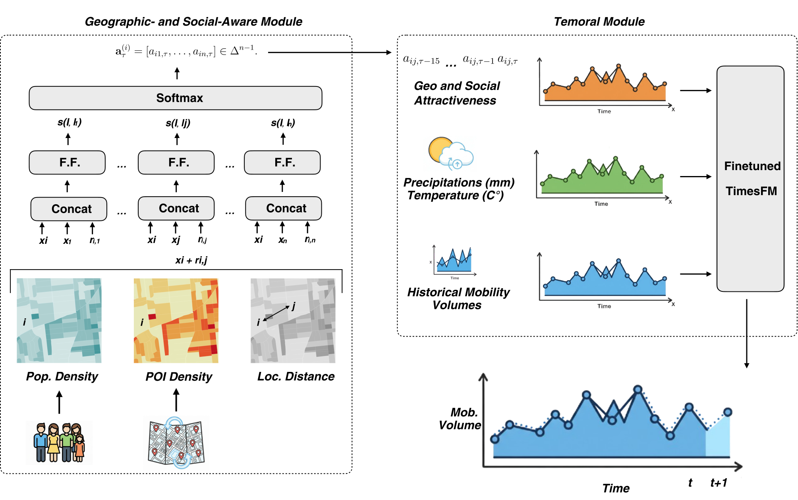
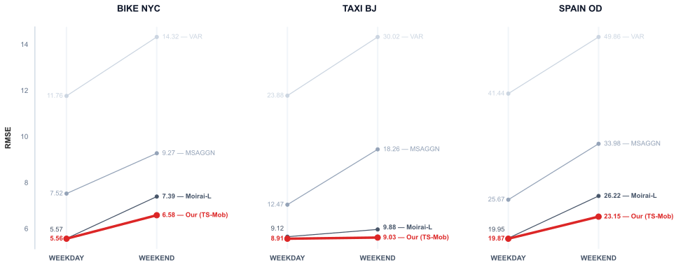

ACM SIGSPATIAL 2026
TS-Mob: Social and Geographical-Aware Time Series Foundation-Model Framework for Human Mobility Prediction
TS-Mob brings geographic and social context to a time series foundation model to predict how many people will move between regions in the next time interval.
1 Bruno Kessler Foundation2 University of Trento
How TS-Mob works
Each origin–destination pair has a history of counts. TS-Mob forecasts the next count for that pair using a geographic signal and a temporal model.
Start with places
Population, POI counts and distance describe each origin–destination pair.

How are the two models trained?
For each pair, the shared scoring network takes the population and 16 Overture POI counts at both ends, along with the Haversine distance between their centroids. The network learns observed destination shares from aggregated training-period flows with a cross-entropy loss. Its attractiveness values are then held fixed while TimesFM is fine-tuned with mean squared error. Future test flows are excluded when fitting the spatial network.
Benchmark results
TS-Mob improves on the reported baselines across bike trips in New York, taxi trips in Beijing, and flows between irregular regions in Spain.
16 × 8 grid · hourly counts
| Model | RMSELower is better | MAELower is better | CPCHigher is better |
|---|---|---|---|
| TS-Mob | 5.87 | 2.86 | 0.75 |
| Traditional time series | |||
| MA | 19.87 | 5.28 | 0.37 |
| ARIMA | 12.65 | 4.51 | 0.42 |
| VAR | 12.50 | 4.48 | 0.42 |
| Deep learning | |||
| RNN | 10.24 | 4.15 | 0.58 |
| LSTM | 10.29 | 4.16 | 0.59 |
| GRU | 10.15 | 4.10 | 0.59 |
| ST-ResNet | 9.38 | 4.22 | 0.61 |
| DMVSTNet | 9.16 | 4.17 | 0.64 |
| ACMF | 8.88 | 4.13 | 0.65 |
| CrowdNet | 8.53 | 4.07 | 0.67 |
| DSTAGNN | 8.15 | 3.68 | 0.67 |
| MSAGGN | 8.02 | 3.59 | 0.68 |
| Foundation models · zero-shot | |||
| TimeLLM | 6.52 | 3.16 | 0.69 |
| Moirai-S | 6.32 | 3.08 | 0.70 |
| TimesFM | 6.18 | 3.04 | 0.70 |
| Moirai-L | 6.09 | 3.04 | 0.72 |
| Foundation models · fine-tuned | |||
| Moirai-S | 6.28 | 3.00 | 0.72 |
| TimesFM | 6.11 | 2.98 | 0.71 |
| Moirai-L | 6.01 | 2.99 | 0.74 |
All 19 baselines from the extended paper.
What does attractiveness add?
We fine-tune the same TimesFM backbone with four sets of inputs. Adding attractiveness alone matches the full model’s reported CPC on Bike NYC and Spain OD. The full model has the lowest RMSE on all three datasets.
| TimesFM inputs | RMSE | CPC |
|---|---|---|
| Mobility only | 6.11 | 0.71 |
| Mobility + weather | 6.05 | 0.74 |
| Mobility + attractiveness | 5.91 | 0.75 |
| Full TS-Mob | 5.87 | 0.75 |
Weekday and weekend performance
TS-Mob has the lowest RMSE among the models shown on both weekdays and weekends across all three datasets.

From one to ten steps ahead
At ten steps ahead, TS-Mob’s RMSE is 4% to 10% higher than at one step, depending on the dataset. Each step is one hour in Bike NYC and Spain OD, and 30 minutes in Taxi Beijing.
| Steps ahead | RMSE | CPC | MAE |
|---|---|---|---|
| 1 step | 5.87 | 0.75 | 2.86 |
| 3 steps | 5.94 | 0.75 | 3.01 |
| 5 steps | 6.04 | 0.74 | 3.08 |
| 10 steps | 6.11 | 0.72 | 3.11 |
Explore the research
The repository includes data preparation, training, and evaluation scripts. Start with the synthetic dataset to explore the workflow before preparing real mobility data.
Installation commands
git clone https://github.com/MassimilianoLuca/ts-mob.git
cd ts-mob
python -m venv .venv
source .venv/bin/activate
pip install -r requirements.txt
pip install 'timesfm[xreg]'